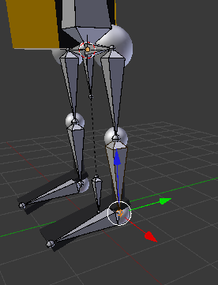
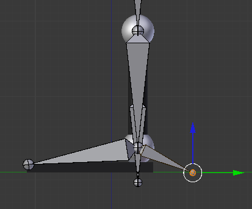
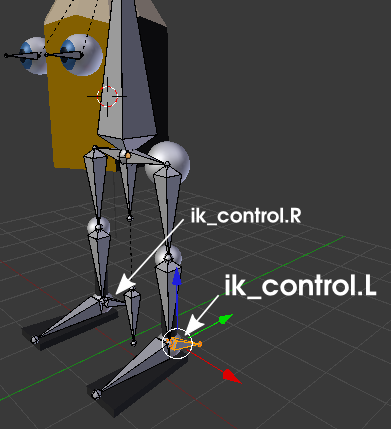
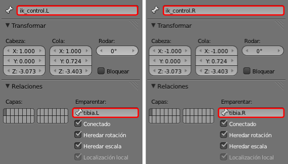

Cinemática inversa
Base teórica
Llega el momento de asignarle a este rigging una cinemática inversa para que funcione como queremos; pero antes es necesario crear un par de huesos nuevos.
- Seleccionamos la cola del hueso tibia.L. En realidad no nos preocupamos mucho de si es la cola de tibia.L o la cabeza de pie.L.

- Nos situamos en el punto de vista lateral ("NumPad 3") y extruimos con "Shift_E" para aprovechar Simetría X y que se cree el par de huesos a la vez.

- Vigilamos, como siempre, que no haya rotaciones en ninguno de los dos huesos y los llamamos ik_control.L y ik_control.R ("ik" hace referencia a inverse kinematics y es una especie de estándar en la denominación de los controladores de estas cinemáticas).

- En el panel Hueso
 nos aseguramos de que la relación de parentesco sea la adecuada; ik_control_L tiene que ser hijo de tibia.L, y ik_control.R tiene que ser hijo de tibia_R.
nos aseguramos de que la relación de parentesco sea la adecuada; ik_control_L tiene que ser hijo de tibia.L, y ik_control.R tiene que ser hijo de tibia_R.

Llega el momento de asignarle a este rigging una cinemática inversa para
que funcione como queremos. En Modo Posado  le activamos al hueso ik_control.L la opción CI automática en el cuadro Herramientas ("T")
le activamos al hueso ik_control.L la opción CI automática en el cuadro Herramientas ("T")
Al mover el hueso ik_control.L la cinemática funciona pero presenta algunos asuntos que no se ajustan a lo esperado, entre los que destaca que la cadena de huesos se extiende hasta afectar a cadera.L.
Lamentablemente CI automática sirve para pocas cosas; a lo sumo para explicarle a un recién llegado el fundamento de la cinemática inversa. Para que todo funcione según lo esperado habrá que recurrir a la restricción Cinemática inversa.